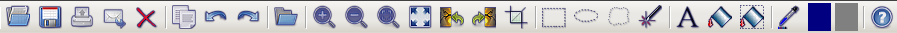
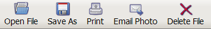

The toolbar just underneath the menu can be used to execute commands such as Save, Print, and Email. To see which
command an icon represents, move the mouse to the icon for a moment and a tool tip will appear with the command name.
You can change the toolbar icon size, customize the tools that appear in the toolbar, show or hide tool captions, or remove the
toolbar completely by selecting Customize Toolbar under the Tools menu.
Photo Mud Explorer and Photo Mud Editor use separate toolbars, and either toolbar can be customized.
Photo Mud Editor toolbar:

Photo Mud Explorer toolbar:
Toolbar with Text Captions:

When the captions are displayed with the toolbar, there may not be enough room on the screen to show all the buttons. When
this happens, you can access the rest of the toolbar using a small drop-down menu at the right end of the tool bar.